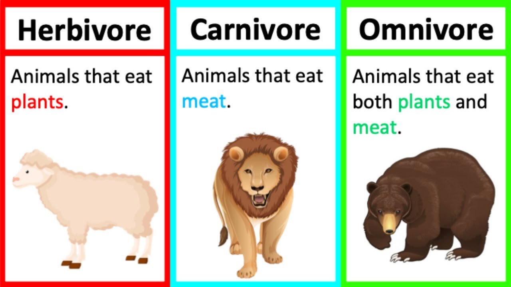
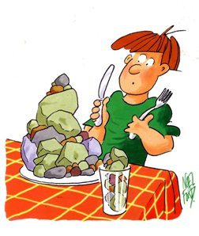

2023 წლის 28 ნოემბრამდე ყველამ ვიცოდით, რომ არსებობდა კვების 3 ტიპი

Სწორედ ამ დღეს ერთმა ადამიანმა მოახდინა გადატრიალება სამეცნიერო სამყაროში
Ნოემბრის მშვიდი საღამო იყო, გაბრიელი წყნარად უხსნიდა მეოთხე ჯგუფის
წევრებს ახალ თემას.
უეცრად, სად იყო და სად არა, გაისმა უცნობი ადამიანის ხმა...
iuiui
- Ამ ადამიანმა შეძლო გაეჩერებინა ყველა, მათ შორის,
გიორგი ლობჟანიძე
(Რამდენიმე წუთით, მაგრამ მაინც...)
- Შეძლო ელაპარაკა იმაზე მეტი, ვიდრე ზურა და ცოტნე ლაპარაკობენ HTML-ზე
- და ყველაზე მთავარი- მან დაამკვიდრა ტერმინი ქვის მჭამელი

Როგორც მან განაცხადა, ერთ წელიწადში ის ჩაატარებს კონკურსს-
"საუკეთესო ქვის მჭამელი"
კონკურსში მონაწილეობას იღებენ მეოთხე ჯგუფის წევრებიც
- გაბრიელის რაზმი
- თინათინ ზუზაძე
- გიორგი ლობჟანიძე
- ლუკა
- სალომე მილაძე
- ნიკა დათუაშჟილი
- თეკლა პაპაჟა
- Თემურ სოლომნიშვილი
- Დემეტრე ხარატიშვილი
- Გიო კაციტაძე
- Მირიან გელაშვილი
- Რატი მურღულია
- Ნინო სოლომონია
- Ბექა გიორგობიანი
- Ბექა ბერაშვილი
- Ნინი გოგლიჩიძე
- Თემო ლაბაძე
- Გიორგი ჩხეტიანი
- Ალექსანდრე თორდია
- ცოტნე სართანია
- გიო აბულაძე
- Ჯანეზაშვილის რაზმი
- Აკო მათიაშვილი
- Ანრი ზუბაშვილი
- Დაჩი ვაშაგაშვილი
- Ლუკა სირაძე
- Ნოი ცომაია
- Ტატო ჩოგოვაძე
- Ლუკა
- Ტყეშელაშვილის რაზმი
- Როსტომ ჩაგუნავა
- Მერაბ ციცხვაია
- Გიგი გაბიტაძე
- Ნიკა ბაქრაძე
- ეკატერინე ცინცაბაძე
- Ფილიშვილის რაზმი
- Ლუკა მაზიაშვილი
- Დათო ქუფარაშვილი
- Ნიკო ანდოევი
- Ალი
- ილია ადამია
Გამარჯვებული გამოვლინდება ერთ წელში

Ამ ჯილდოს აღების შემდეგ ვის გადაუხდით მადლობას პირველი?